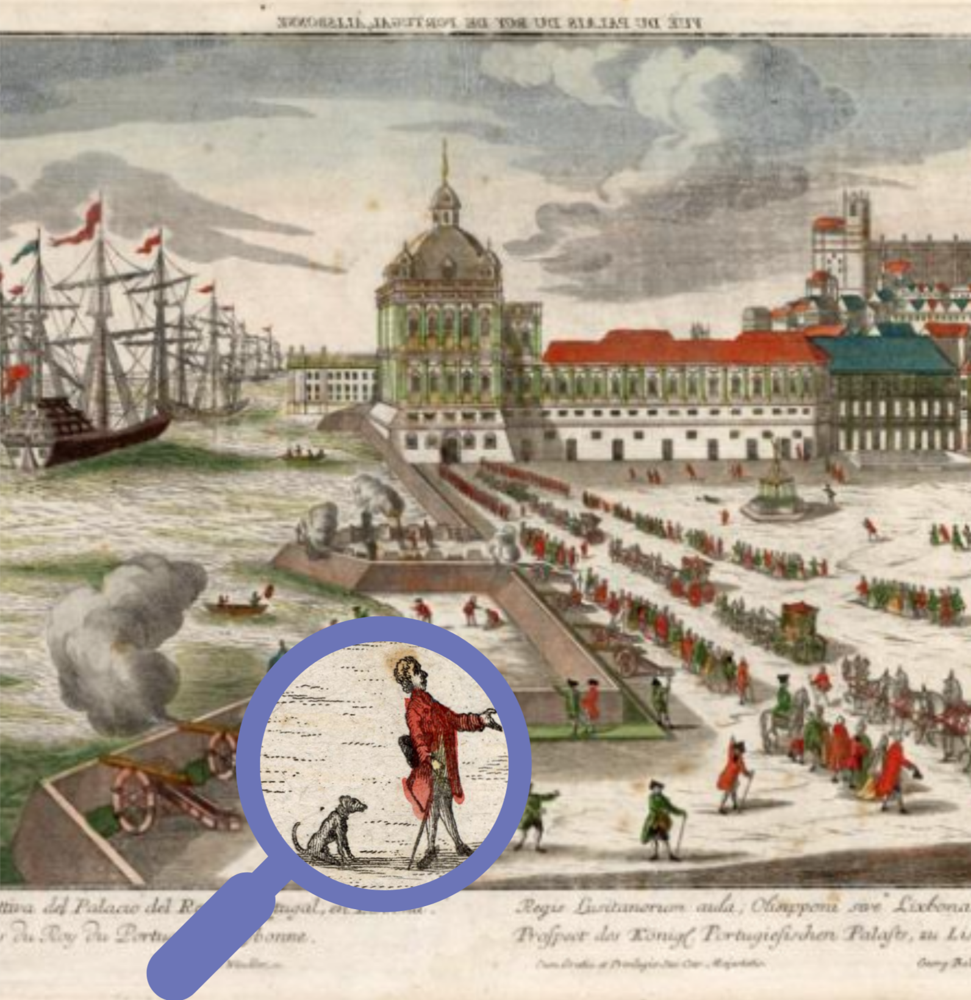
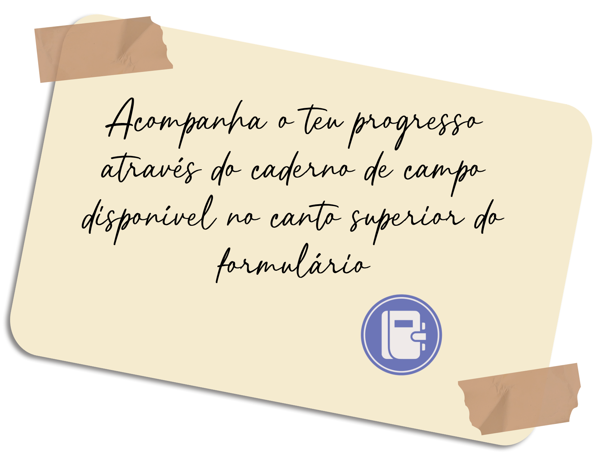

TAG ANIMALx
Ajuda-nos a descobrir os animais nas representações do Museu de Lisboa!
Bem-vindo ao Tag ANIMALx
Ao longo dos séculos, os animais partilharam o espaço urbano e a vida quotidiana. Hoje, existem inúmeras representações animais "escondidas" no património da cidade de Lisboa.
Como detetive historiador, a tua missão é identificar os animais presentes no acervo do Museu de Lisboa. Com cada descoberta, irás desvendar a presença de animais espécies ao longo da História da cidade.
Nesta iniciativa de Ciência Cidadã, o teu esforço é recompensado! Ao analisar os registos e ganhar pontos, vais progredindo de nível na tua carreira de investigação. Começarás a tua jornada como Curador Estagiário e, com dedicação, poderás alcançar o prestigiado título de Curador Catedrático.
Ajuda-nos a encontrar os animais de Lisboa!

Primeiro Passo: Regista-te como Investigador ANIMALx!
A nossa base de dados está a crescer graças à tua ajuda, e todas as descobertas merecem ser reconhecidas!
Queres que o teu nome fique para sempre associado aos animais que ajudares a catalogar nas coleções do Museu de Lisboa?
Ao criares o teu perfil de Investigador ANIMALx, o teu trabalho ganha uma assinatura. Assim, quando os especialistas receberem os teus registos validados, saberão exatamente quem foi o detetive responsável por essa descoberta.


Como em qualquer arquivo oficial, temos regras importantes de segurança e privacidade.
Para guardarmos o teu nome e associarmos as tuas descobertas ao teu perfil, precisamos da tua autorização (ou da de um adulto, se fores mais novo).
PERGUNTA 1 – Há algum animal na imagem?
Caderno de Campo
Curador Estagiário


Coleções
Azulejaria
0/0 registos
Cerâmica
0/0 registos
Escultura
0/0 registos

Desenho
0/0 registos
Pintura
0/0 registos
Gravura
0/0 registosMais coleções
em breve....
O teu primeiro passo na História!
Acabaste de entrar no arquivo do Museu de Lisboa como Curador Estagiário. Começa a explorar as coleções e ajuda-nos a desvendar as primeiras representações de animais.